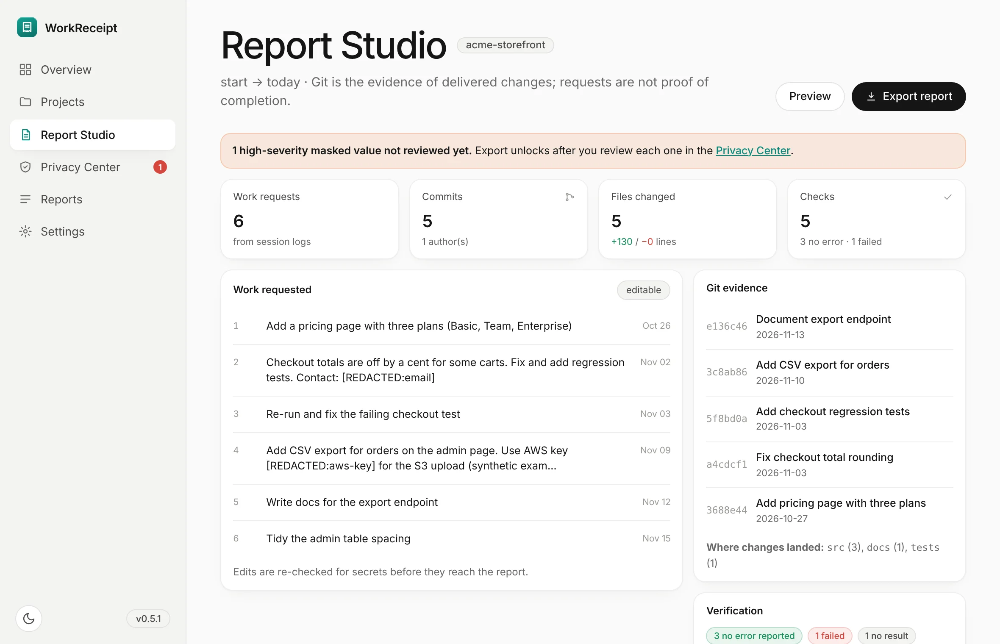
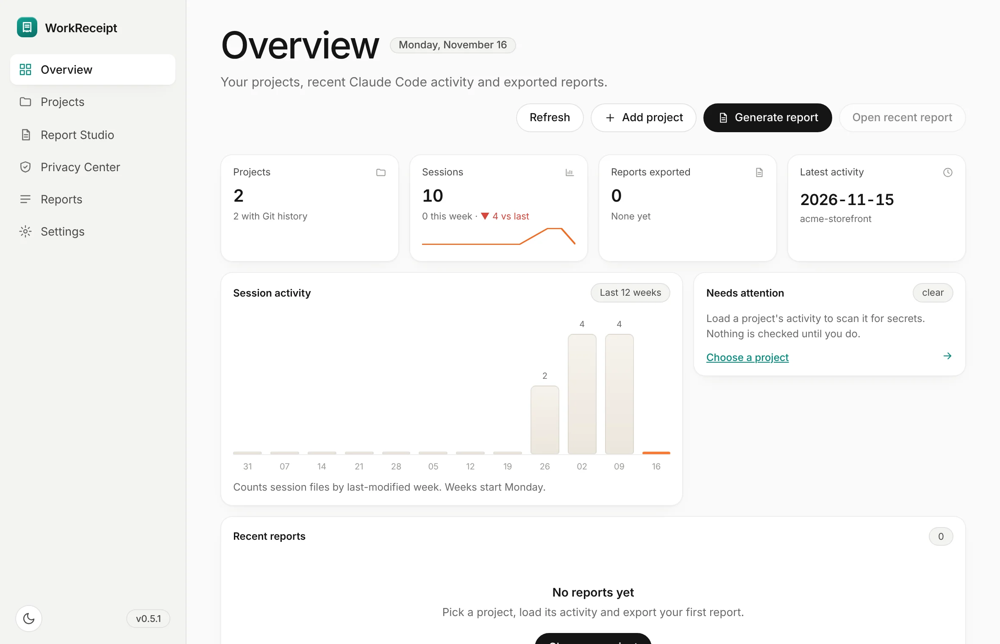
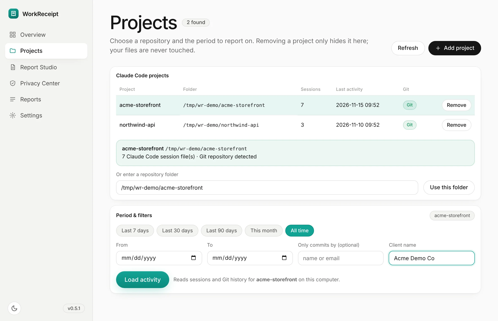

Claude Code activity analysis
Reads your local Claude Code session logs and extracts the work you asked for, filtered to the project you choose.
WorkReceipt reads your Claude Code sessions and Git history on your Mac and turns them into a clear, editable, privacy-reviewed work report. No account. Nothing uploaded.

Every screen below is a capture of the actual WorkReceipt app (v0.5.1), run on a synthetic demo project.




Hours of prompts, tool calls and test runs live in log files your client will never open. Raw commit lists don't explain intent. Chat transcripts expose far more than you'd ever send.
Reads your local Claude Code session logs and extracts the work you asked for, filtered to the project you choose.
Commits in the period become the evidence of delivered changes, with the areas of the codebase they touched.
Rewrite any work description in plain language before you export. Edits are re-checked for secrets.
Masked values are listed by severity. Export stays blocked until each high-severity item has your decision.
Export a standalone, print-ready report. Share the HTML file or a PDF, whichever your client prefers.
Analysis happens on your Mac. No cloud service has to see your sessions or your repository.
Select a repository WorkReceipt found from your Claude Code history, set the period and name the client.
Check requests against Git commits and recorded checks. Review every masked value that needs your decision.
Edit wording, then export a clean HTML report or PDF to send to your client.
WorkReceipt is designed so you never have to trust a server with client work.
Logs and repositories are read from disk on your computer and processed there.
No sign-up, no login. Open the app and start.
Nothing is sent to a WorkReceipt server to generate a report.
Keys, tokens, emails and paths are masked. You must review each high-severity finding before export.
A request is not proof of completion. The report says so, and shows what Git and your recorded checks actually support.
For freelancers helping validate WorkReceipt on real projects before a public release.
An affordable license for freelance developers and small agencies, once the product is validated.
WorkReceipt is Mac-first and is being built and tested on macOS. Specific minimum macOS and Apple silicon / Intel support will be confirmed at release. Windows and Linux are not supported targets.
You need Claude Code session logs on your Mac, which Claude Code stores locally. WorkReceipt reads those logs for the project you pick. It does not need Claude Code to be running.
Yes. Git history is the evidence of delivered changes, so the project should be a Git repository with commits in the reporting period. Sessions without matching commits are shown as requests only.
Sessions and repositories are read and processed locally. There is no required account and no cloud upload. Only prompt titles, check commands, commit subjects and folder names are used in a report; file contents and tool output are not.
The report separates what was requested, what Git shows was delivered, and which checks were recorded. It never claims a request was completed, and recorded checks are not re-run. Redaction is best-effort, so always read a report before you send it.
A standalone HTML report, and PDF export. You can edit descriptions before exporting.
The app is in private beta. No public download exists, so there is nothing to install from this page yet.